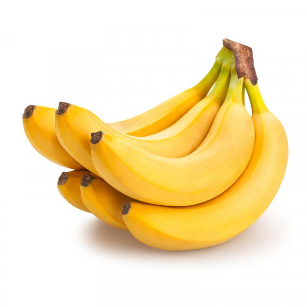
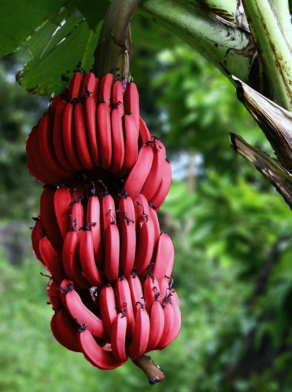
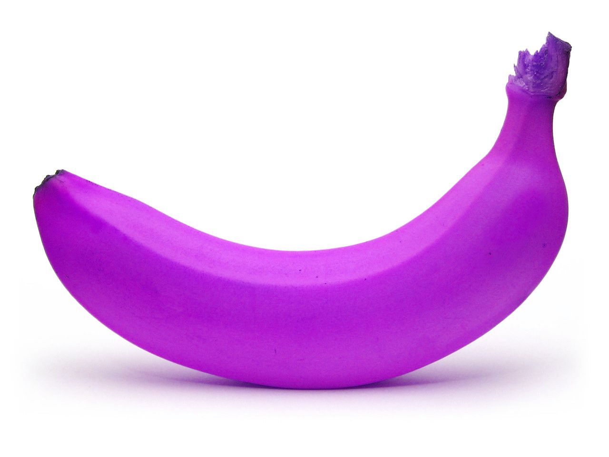
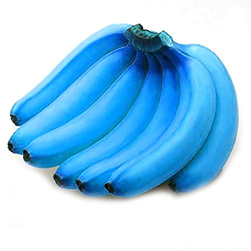
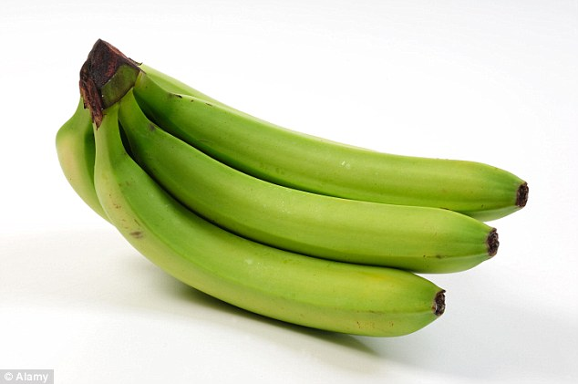

The Yellow Bananas
These variants are the ‘perfect’ bananas for many. This sweeter, softer yellow banana is easier to digest as the resistant starch changes into simple sugar. They contain more antioxidants when compared to the green ones, as bananas have a higher level of antioxidants as they ripen. But the higher glycemic index makes the yellow variant something Type 2 Diabetes patients need to avoid.
| Banana-type | Yellow |
|---|---|
| Price | 150 kr/kg |
| In stock | +500 units |
| Rating | ⭐⭐⭐⭐ |
The Red Bananas
Red bananas are a group of varieties of banana with reddish skin. Some are smaller and plumper than the common Cavendish banana, others much larger. When ripe, raw red bananas have a flesh that is cream to light pink in color. They are also softer and sweeter than the yellow Cavendish varieties, some with a slight raspberry flavor and others with an earthy one. Many red bananas are exported by producers in East Africa, Asia, South America and the United Arab Emirates. They are a favorite in Central America as a form of aphrodisiac juice, along with being a favourite in India in order to promote fertility but are sold throughout the world.
| Banana-type | Red |
|---|---|
| Price | 700 kr/kg |
| In stock | 258 units |
| Rating | ⭐⭐⭐⭐⭐ |
The Purple Bananas
Red bananas (Red Dacca) refer to a classification of banana cultivars that have red skin with creamy pink flesh. In general, red banana cultivars are smaller, sweeter and softer than Cavendish bananas. However, some types of red bananas can be larger than traditional bananas. Usually, red varieties of bananas are classified by the region where they grow. For example, there are Red Spanish, Red Cuban, or Red Colorado bananas. One thing these red bananas have in common is their deliciously sweet taste. There is also a type of Red Cavendish banana. If you find where to buy red bananas, make sure and wait until they are ripe before eating them. Unripe red bananas tend to have an unpalatable chalky texture and taste. When they are ripe, their peel turns reddish-purple skin. Peeling the skin reveals a light creamy flesh that is semi-soft. Some types of red bananas have yellowish-orange flesh. The sweet flesh has hints of bananas and raspberries when you bite into it. You can eat red bananas raw similar to yellow Cavendish bananas. You can also bake them or toast them to create a delicious hot sweet dessert. As with most bananas, red bananas are also a good source of nutrients. However, compared to yellow varieties, red bananas have more beta carotene and vitamin C. The deeper the orange/red color, the more B-carotene is in the flesh. Some people claim that these ‘alternative’ red banana cultivars are the healthiest type of bananas you can buy. In fact, some studies have suggested that eating orange-fleshed red bananas could be a good way to prevent vitamin A deficiencies.
| Banana-type | Purple |
|---|---|
| Price | 346 kr/kg |
| In stock | +1000 units |
| Rating | ⭐⭐⭐ |
The Blue Bananas
Blue Bananas are a type of banana with a taste and texture that is reminiscent of vanilla ice cream. In addition to their interesting flavor, they stand out for the bright blue hue of their peel and their creamy white flesh. Though they’re not as well known as Cavendish bananas, which are the bananas you may normally find at the grocery store, blue Java bananas are widely grown in Southeast Asia and enjoyed as a delicious, all-natural dessert. This article looks at blue Java bananas, why they’re often compared to ice cream, and whether they’re good for your health. They’re a hybrid of two species of banana native to Southeast Asia — Musa balbisiana and Musa acuminata. Before they’re fully ripe, they have an unusual blue-tinged peel due to their natural wax coating. This tends to slowly fade as they mature. They also have a longer, stouter appearance than other banana varieties, with white flesh and small black seeds
| Banana-type | Blue |
|---|---|
| Price | 169 kr/kg |
| In stock | +1000 units |
| Rating | ⭐⭐⭐⭐⭐+ |
The Green Bananas
When bananas are green in colour, be assured that they are full of high resistant starch. If you are watching your diet and trying to avoid food high in sugar content, green bananas might be one of the healthiest food options for you. They might taste bitter as they contain less sugar. These unripe bananas also contain probiotic bacteria which is good for your digestive system and are also perfect for cooking. Do keep in mind that this green variant might cause bloating and make you feel gassy.
| Banana-type | Green |
|---|---|
| Price | 27 kr/kg |
| In stock | 23 units |
| Rating | ⭐⭐+ |